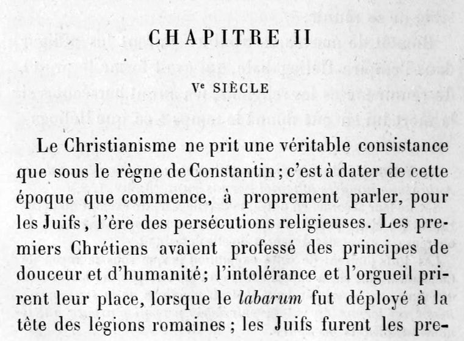

“L’ère des persécutions religieuses” (p. 16)
French: Paris 1859, ch. II (“Ve siècle”), p. 16, scan. Highlighted: Lecky’s quotation.

Christianity took on a real consistency only under the reign of Constantine; it is from that time that there begins, properly speaking, for the Jews, the era of religious persecutions. The first Christians had professed principles of gentleness and humanity; intolerance and pride took their place when the labarum was unfurled at the head of the Roman legions; the Jews were the first …
Original French
Le Christianisme ne prit une véritable consistance que sous le règne de Constantin; c’est à dater de cette époque que commence, à proprement parler, pour les Juifs, l’ère des persécutions religieuses. Les premiers Chrétiens avaient professé des principes de douceur et d’humanité; l’intolérance et l’orgueil prirent leur place, lorsque le labarum fut déployé à la tête des légions romaines; les Juifs furent les premiers …
| Lecky (ch. VI, note 64; read on his pp. 298–299 = n313–n314) | Bédarride, p. 16 |
|---|---|
| la règne de Constantine | le règne de Constantin |
| et c’est à dater | c’est à dater |
| pour les Juifs l’ère | pour les Juifs, l’ère |
“La règne” for “le règne” and the English “Constantine” are Lecky’s slips (or his printer’s), left in his text as printed.
“Dieu ne se réjouit pas du sang répandu”: Alexander II (p. 114)
French: Paris 1859, ch. VIII (“XIe siècle”), p. 114, scan.
Some years before, when the French were going to fight the Saracens in Spain, the same fervour had seized men’s minds, and the sword had likewise been raised over the heads of the Jews. In several provinces they had perished. At Narbonne, the protection of the viscount Bérenger saved them. Was what the lord of Narbonne did impossible for the rulers of the other provinces? In speaking of Bérenger’s conduct we must not forget the letter that Pope Alexander II wrote him about it: “We have seen with pleasure (the pontiff tells him) that you have rescued the Jews from the death that threatened them: God does not rejoice in the shedding of blood.”
Pope Alexander II gave back to the Deity the character that men were striving to strip from it; but the clergy as a whole were far from sharing these principles.
Original French
Quelques années auparavant, lorsque les Français allaient combattre les Sarrasins en Espagne, la même ferveur s’était emparée des esprits, et le glaive s’était également levé sur la tête des Juifs. Dans plusieurs provinces ils avaient succombé. A Narbonne, la protection du vicomte Béranger les sauva. Ce que fit le seigneur de Narbonne était-il impossible aux chefs des autres provinces? En parlant de la conduite de Béranger, nous ne devons pas oublier la lettre que le pape Alexandre II lui écrivit à ce sujet: « Nous avons vu avec plaisir (lui dit ce pontife) que vous avez soustrait les Juifs à la mort dont on les menaçait: Dieu ne se réjouit pas du sang répandu. »
Le pape Alexandre II rendait à la Divinité le caractère dont on s’efforçait de la dépouiller; mais tout le clergé était loin de partager ces principes.
Bédarride gives the Pope’s words in French; his note 11 to this page (not read) gives the source. On p. 260 (from the OCR) he sums up the papacy’s record: “The Holy See had almost always been a refuge for the Jews against the storm. The Popes had sometimes sold them their protection, but they had rarely refused it.” The welcome that Alexander VI gave to the Jews expelled from Spain, which Lecky praises, is on pp. 307–310 of this edition (OCR only).
Further down the rabbit hole
Sources that Lecky cites in the notes next to the ones that cite this page.
- Paramo, De origine et progressu officii sanctae inquisitionisWhy the dead are tried for heresy
- Muratori, Antiquitates Italicae, dissertation XVI“Sodom and Cahors”: how medieval Christians became moneylenders
- Van Bruyssel, Histoire du commerce et de la marine en BelgiqueThirty kingdoms trading with Flanders, and a friar who called murder ‘meritorious’
- Codex Theodosianus XVI.8.1 and XVI.10.3Constantine on Jews and converts, and the temples spared for the sake of the games
- Milman, The History of ChristianityDid Constantine ban the pagan sacrifices? A dean weighs Eusebius against Constantine
- Palmer, A Treatise on the Church of Christ“Whosoever is separated from the Catholic Church … will not have life”
Backlinks
Every place in Rationalism in Europe that links to this page (generated automatically when the site is built).